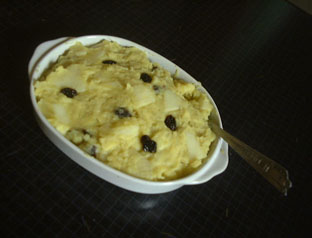

りんご入りスイートポテト
料理館入口へ

○材料
さつま芋…1個(15cm強)
りんご…1個か2個
レーズン…適当
牛乳…半カップ
マーガリンまたはバター…大さじ２杯程度
○作り方
さつま芋は洗ってラップで包み、電子レンジでやらかくする。指で押してみて確認します。結構長くかかるかもしれません。うちのレ ンジでは7分でした。もっとかかるかもしれません。
皮をむいてつぶします。レンジでちゃんとやらかくなっているとむきやすいです。
りんごも皮をむいて８分の１くらいに切って５mm幅くらいにきざみます。
③を電子レンジで２分くらい加熱し、でた果汁とともに２と混ぜます。
④にマーガリンと牛乳を混ぜ、レーズンを加えて出来あがり！